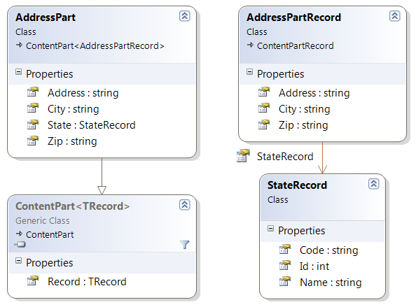
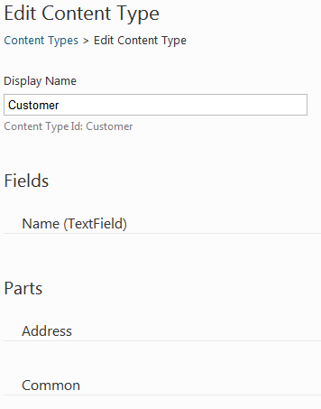
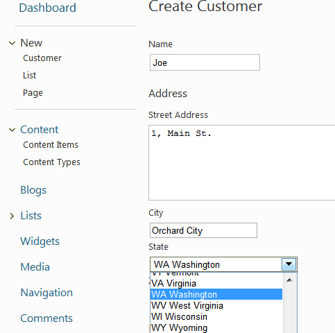
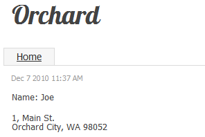
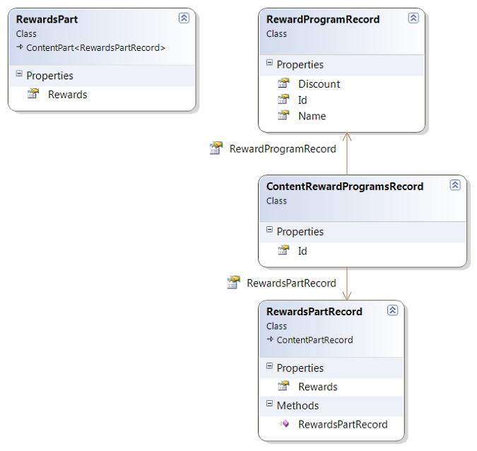
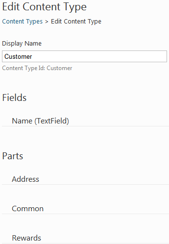
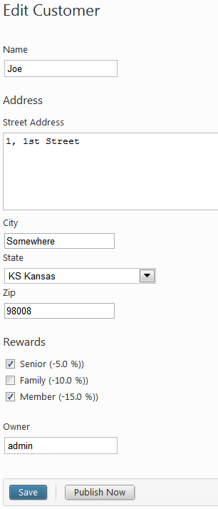
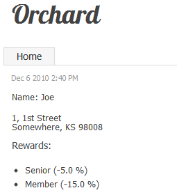
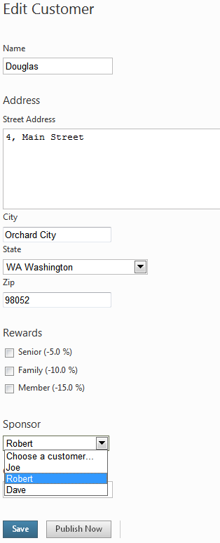
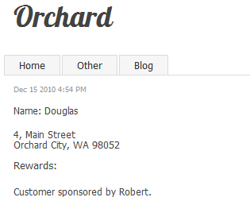

Deprecation note
！警告“弃用票据”
Bertrand LeRoy writes [in his blog on Wednesday, June 10, 2015](https://weblogs.asp.net/bleroy/many-ways-to-relate-orchard-things-part-1-database-relations):
> A long time ago, I wrote [this chapter] on how to implement 1-n and n-n
> relationships in Orchard using database relations. It was much needed at
> the time, as this was still a difficult topic. Between spotty mapping
> mechanisms for relationships, and specific Orchard conventions, it wasn’t
> something you could expect just anybody to figure out on their own. It is
> still the way to go under some conditions, but those conditions are
> arguably very uncommon, and there are now much better solutions for more
> common cases.
>
> [...]
>
> I’m tempted to limit my recommendation to use this technique to cases
> where no other technique is applicable. As you’ll see by reading the other
> posts in this series, that leaves very few situations.
It is very common for contents to consist in part of lists or choices in lists.
内容通常包含列表中的部分列表或选项。
For example, an address can have a state or region property where the value is one in a predefined list of choices.
例如，_address_可以具有_state_或_region_属性，其中值在预定义的选项列表中为1。
That is a 1-n relationship. A n-n relationship could be for example a list of commercial rewards that a customer can benefit from.
这是一个_1-n_的关系。例如，_n-n_关系可以是客户可以从中受益的商业奖励列表。
Orchard does of course provide support for those scenarios. This topic is going to walk you through the creation of such contents.
Orchard当然会为这些场景提供支持。本主题将引导您完成此类内容的创建。
Building a 1-N Relationship
建立_1-N_关系
The model that we're going to build here consists of an Address part that can be attached for example to a Customer content type.
我们将在这里构建的模型包含一个Address部分，可以附加到例如Customer内容类型。
The address part has a street address, a zip code, a city name and a state.
地址部分有街道地址，邮政编码，城市名称和州。
The state is what we are going to model as a 1-n relationship to a table of states.
状态是我们将要建模为与州表的“1-n”关系。
Note
！注意
This is clearly over-normalized, as a state in an address would usually be sufficiently well represented by a simple two-letter state code.
The UI can then take care of representing the choice of that code as a constrained choice in a list of states.
We are not claiming what we are building here is the correct way to represent a state in an address, but that the process exposed here is representative of what you'd follow to build a real-world 1-n association in Orchard.
Modeling the Address Part
建模地址部分
Here is the code for the Address part:
这是“地址”部分的代码：
using Orchard.ContentManagement;
namespace RelationSample.Models {
public class AddressPart : ContentPart<AddressPartRecord> {
public string Address {
get { return Retrieve(r => r.Address); }
set { Store(r => r.Address, value); }
}
public string City {
get { return Retrieve(r => r.City); }
set { Store(r => r.City, value); }
}
public StateRecord State {
get {
var rawStateRecord = Retrieve<string>("StateRecord");
return StateRecord.DeserializeStateRecord(rawStateRecord);
}
set {
var serializedStateRecord = StateRecord.SerializeStateRecord(value);
Store("StateRecord", serializedStateRecord);
}
}
public string Zip {
get { return Retrieve(r => r.Zip); }
set { Store(r => r.Zip, value); }
}
}
}
This stores the data in both the infoset and in a database record.
这将数据存储在信息集和数据库记录中。
However you can only store simple datatypes in the infoset so you can see that State field runs some extra code to encode the class into a string.
但是，您只能在信息集中存储简单的数据类型，这样您就可以看到State字段运行一些额外的代码来将类编码为字符串。
All properties in the AddressPart are proxies to the record properties:
AddressPart中的所有属性都是记录属性的代理：
using Orchard.ContentManagement.Records;
namespace RelationSample.Models {
public class AddressPartRecord : ContentPartRecord {
public virtual string Address { get; set; }
public virtual string City { get; set; }
public virtual StateRecord StateRecord { get; set; }
public virtual string Zip { get; set; }
}
}
The state record class itself has a two-letter code and a name.
状态记录类本身具有两个字母的代码和名称。
It also has methods to serialize and deserialize its data into a string so that the AddressPart above can store its data in the infoset.
它还有将序列化和反序列化为字符串的方法，以便上面的AddressPart可以将其数据存储在信息集中。
namespace RelationSample.Models {
public class StateRecord {
public virtual int Id { get; set; }
public virtual string Code { get; set; }
public virtual string Name { get; set; }
public static StateRecord DeserializeStateRecord(string rawStateRecord) {
if (rawStateRecord == null) {
return new StateRecord();
}
var stateRecordArray = rawStateRecord.Split(new[] { ',' });
return new StateRecord() {
Id = String.IsNullOrEmpty(stateRecordArray[0]) ? 0 : Int32.Parse(stateRecordArray[0]),
Code = stateRecordArray[1],
Name = stateRecordArray[2]
};
}
public static string SerializeStateRecord(StateRecord stateRecord) {
if(stateRecord == null) {
return "";
}
return String.Join(",", stateRecord.Id, stateRecord.Code, stateRecord.Name);
}
}
}
Here is a representation of what we just showed in code:
这是我们在代码中展示的内容的表示：

Creating the Database Tables and Part
创建数据库表和部件
The database structure for the model we just built can be created from a migration:
我们刚刚构建的模型的数据库结构可以通过迁移创建：
public int Create() {
SchemaBuilder.CreateTable("AddressPartRecord",
table => table
.ContentPartRecord()
.Column<string>("Address")
.Column<string>("City")
.Column<int>("StateRecord_Id")
.Column<string>("Zip")
);
SchemaBuilder.CreateTable("StateRecord",
table => table
.Column<int>("Id", column => column.PrimaryKey().Identity())
.Column<string>("Code", column => column.WithLength(2))
.Column<string>("Name")
);
ContentDefinitionManager.AlterPartDefinition("AddressPart",
builder => builder.Attachable());
return 1;
}
This migration creates an AddressPartRecord table that is a content part record (this gets us the default fields that a content part needs).
此迁移创建一个AddressPartRecord表，它是一个内容部分记录（这将获取内容部分需要的默认字段）。
It adds columns for address, city and zip that are going to be auto-mapped to our record's properties.
它添加了地址，城市和zip的列，这些列将自动映射到我们的记录属性。
The interesting column here is StateRecord_Id.
这里有趣的专栏是StateRecord_Id。
As you can see, its type is the same as the type of the Id column of the StateRecord class, because the system will be able to recognize this as a foreign key and to map that integer value to a StateRecord property by just following the relation.
如您所见，它的类型与StateRecord类的Id列的类型相同，因为系统将能够将其识别为外键并将该整数值映射到StateRecord只关注这种关系的财产。
It is important here that the name of the column that will represent the relation is the name of the column on the "1" end of the relation, followed by an underscore and the name of the column of the "n" end of the relation.
这里重要的是，代表关系的列的名称是关系“1”端的列名，后跟下划线和关系“n”端列的名称。
There is nothing remarkable on the StateRecord table: it's just mapping Id to be the primary key and constraining the Code column to be 2 characters long.
在StateRecord表中没有什么值得注意的：它只是将Id映射为主键，并将Code列限制为2个字符长。
The last statement before the return in the migration is declaring the AddressPart and making it attachable. That will enable us to attach it to any content type.
迁移返回之前的最后一个语句是声明AddressPart并使其可连接。这将使我们能够将其附加到任何内容类型。
Populating the State Table
填充状态表
Note
！注意
This section is included for completeness of the sample code but is far from essential to understanding how to implement relationships in Orchard.
Please consider it as sample data generation.
If you're following along and want to import this data you can find code in the `migrations.cs` file.
This is included in the downloadable source code example link at the end of this guide.
Because the list of states is going to be relatively stable, I did not make them content items (although that would be entirely possible with just a little more work).
因为状态列表将相对稳定，所以我没有将它们作为内容项（尽管只需要更多的工作就可以完全实现）。
Instead, I'm populating the table with a list of states right in the migration code.
相反，我正在使用迁移代码中的状态列表填充表。
The migration class has a reference to the state repository:
迁移类具有对状态存储库的引用：
private readonly IRepository<StateRecord> _stateRepository;
[...]
public RelationSampleDataMigration(IRepository<StateRecord> stateRepository) {
_stateRepository = stateRepository;
}
It also has the list of states to add to the database:
它还具有要添加到数据库的状态列表：
private readonly IEnumerable<StateRecord> _states =
new List<StateRecord> {
new StateRecord {Code = "AL", Name = "Alabama"},
new StateRecord {Code = "AK", Name = "Alaska"},
[...]
new StateRecord {Code = "WS", Name = "Western Australia"},
};
The population of the table is done by the following code:
表的填充由以下代码完成：
public int UpdateFrom1() {
if (_stateRepository == null)
throw new InvalidOperationException("Couldn't find state repository.");
foreach (var state in _states) {
_stateRepository.Create(state);
}
return 2;
}
The Address Part Handler
地址部分处理程序
The handler for the address part is rather uninteresting and just wires up the repository:
地址部分的处理程序相当无趣，只是连接存储库：
using Orchard.Data;
using Orchard.ContentManagement.Handlers;
using RelationSample.Models;
namespace RelationSample.Handlers {
public class AddressPartHandler : ContentHandler {
public AddressPartHandler(IRepository<AddressPartRecord> repository) {
Filters.Add(StorageFilter.For(repository));
}
}
}
The Address Part Driver
地址部分驱动程序
The driver is more interesting as it prepares the shapes for rendering and handles posted-back admin forms.
驱动程序更有趣，因为它准备渲染的形状和处理回发的管理表单。
using JetBrains.Annotations;
using Orchard.ContentManagement;
using Orchard.ContentManagement.Drivers;
using RelationSample.Models;
using RelationSample.Services;
using RelationSample.ViewModels;
namespace RelationSample.Drivers {
[UsedImplicitly]
public class AddressPartDriver : ContentPartDriver<AddressPart> {
private readonly IAddressService _addressService;
private const string TemplateName = "Parts/Address";
public AddressPartDriver(IAddressService addressService) {
_addressService = addressService;
}
protected override string Prefix {
get { return "Address"; }
}
protected override DriverResult Display(
AddressPart part,
string displayType,
dynamic shapeHelper) {
return ContentShape("Parts_Address",
() => shapeHelper.Parts_Address(
ContentPart: part,
Address: part.Address,
City: part.City,
Zip: part.Zip,
StateCode: part.State.Code,
StateName: part.State.Name));
}
protected override DriverResult Editor(
AddressPart part,
dynamic shapeHelper) {
return ContentShape("Parts_Address_Edit",
() => shapeHelper.EditorTemplate(
TemplateName: TemplateName,
Model: BuildEditorViewModel(part),
Prefix: Prefix));
}
protected override DriverResult Editor(
AddressPart part,
IUpdateModel updater,
dynamic shapeHelper) {
var model = new EditAddressViewModel();
if (updater.TryUpdateModel(model, Prefix, null, null))
{
if (part.ContentItem.Id != 0)
{
_addressService.UpdateAddressForContentItem(
part.ContentItem, model);
}
}
return Editor(part, shapeHelper);
}
private EditAddressViewModel BuildEditorViewModel(AddressPart part) {
var avm = new EditAddressViewModel {
Address = part.Address,
City = part.City,
Zip = part.Zip,
States = _addressService.GetStates()
};
if (part.State != null) {
avm.StateCode = part.State.Code;
avm.StateName = part.State.Name;
}
return avm;
}
}
}
When displaying on the front-end, we prepare a Parts_Address shape that has a reference to the original part (although that is not necessary), all the part properties flattened out and the state is available as both a code and a name.
当在前端显示时，我们准备一个Parts_Address形状，其中包含对原始部件的引用（尽管这不是必需的），所有部件属性都被展平，状态既可以作为代码也可以作为名称使用。
When in the admin UI, we build shapes with a statically-typed view model because these are still easier to use when using form fields and MVC model binding.
在管理UI中，我们使用静态类型的视图模型构建形状，因为在使用表单字段和MVC模型绑定时，这些仍然更容易使用。
That view model, like the shape used on the front-end, has a flattened view of the data that we need to display, but it also has a full list of all the available states, that the view will use to render the state drop-down list:
该视图模型与前端使用的形状一样，具有我们需要显示的数据的平面视图，但它还具有所有可用状态的完整列表，视图将用于呈现状态下降下拉列表：
using System.Collections.Generic;
using RelationSample.Models;
namespace RelationSample.ViewModels {
public class EditAddressViewModel {
public string Address { get; set; }
public string City { get; set; }
public string StateCode { get; set; }
public string StateName { get; set; }
public string Zip { get; set; }
public IEnumerable<StateRecord> States { get; set; }
}
}
The last thing to notice in the driver is that the Editor override that handles postbacks is just using updater.TryUpdateModel(), which is enough to incorporate the submitted form values onto the view model.
驱动程序中最后要注意的是处理回发的Editor覆盖只是使用updater.TryUpdateModel（），这足以将提交的表单值合并到视图模型上。
This is followed by a call into the address service class which will update the actual content part data with the updated model.
然后调用地址服务类，该类将使用更新的模型更新实际内容部分数据。
The Address Service Class
地址服务类
The address service class takes a dependency on the state repository in order to be able to query for the full list of states. Its other method, UpdateAddressForContentItem, copies an EditAddressViewModel onto the address content part of a content item.
地址服务类依赖于状态存储库，以便能够查询完整的状态列表。它的另一个方法UpdateAddressForContentItem将EditAddressViewModel复制到内容项的地址内容部分。
It does so by looking up a state record from the state repository using the state code from the model.
它通过使用模型中的状态代码从状态存储库中查找状态记录来实现。
using System.Collections.Generic;
using System.Linq;
using Orchard;
using Orchard.ContentManagement;
using Orchard.Data;
using RelationSample.Models;
using RelationSample.ViewModels;
namespace RelationSample.Services {
public interface IAddressService : IDependency {
void UpdateAddressForContentItem(
ContentItem item, EditAddressViewModel model);
IEnumerable<StateRecord> GetStates();
}
public class AddressService : IAddressService {
private readonly IRepository<StateRecord> _stateRepository;
public AddressService(IRepository<StateRecord> stateRepository) {
_stateRepository = stateRepository;
}
public void UpdateAddressForContentItem(
ContentItem item,
EditAddressViewModel model) {
var addressPart = item.As<AddressPart>();
addressPart.Address = model.Address;
addressPart.City = model.City;
addressPart.Zip = model.Zip;
addressPart.State = _stateRepository.Get(
s => s.Code == model.StateCode);
}
public IEnumerable<StateRecord> GetStates() {
return _stateRepository.Table.ToList();
}
}
}
Building the Views
构建视图
The Front-End View
前端视图
The front-end view for the part is straightforward as it's just displaying the properties of the shape:
该部件的前端视图很简单，因为它只显示形状的属性：
<p class="adr">
<div class="street-address">@Model.Address</div>
<span class="locality">@Model.City</span>,
<span class="region">@Model.StateCode</span>
<span class="postal-code">@Model.Zip</span>
</p>
We are using the vCard microformat in this template so the address can get picked up by consumers that understand this format.
我们在此模板中使用[vCard微格式]（http://microformats.org/wiki/vCard），因此了解此格式的消费者可以获取该地址。
The Editor View
编辑视图
The editor view is also relatively straightforward, with just the editor for the state being of a little more interest:
编辑器视图也相对简单，只需要对该州的编辑器感兴趣：
@model RelationSample.ViewModels.EditAddressViewModel
<fieldset>
<legend>Address</legend>
<div class="editor-label">
@Html.LabelFor(model => model.Address, T("Street Address"))
</div>
<div class="editor-field">
@Html.TextAreaFor(model => model.Address)
@Html.ValidationMessageFor(model => model.Address)
</div>
<div class="editor-label">
@Html.LabelFor(model => model.City, T("City"))
</div>
<div class="editor-field">
@Html.TextBoxFor(model => model.City)
@Html.ValidationMessageFor(model => model.City)
</div>
<div class="editor-label">
@Html.LabelFor(model => model.StateCode, T("State"))
</div>
<div class="editor-field">
@Html.DropDownListFor(model => model.StateCode,
Model.States.Select(s => new SelectListItem {
Selected = s.Code == Model.StateCode,
Text = s.Code + " " + s.Name,
Value = s.Code
}),
"Choose a state...")
@Html.ValidationMessageFor(model => model.StateCode)
</div>
<div class="editor-label">
@Html.LabelFor(model => model.Zip, T("Zip"))
</div>
<div class="editor-field">
@Html.TextBoxFor(model => model.Zip)
@Html.ValidationMessageFor(model => model.Zip)
</div>
</fieldset>
The DropDownListFor method takes an expression for the property to represent, and a list of SelectListItems that we build on the fly from the complete list of states and what we know of the current state for that address (notice the expression for Selected).
DropDownListFor方法获取要表示的属性的表达式，以及我们从完整状态列表中动态构建的SelectListItems'列表以及我们对该地址当前状态的了解（注意表达式为 Selected`）。
The Placement File
展示位置文件
Finally, we need a placement file to determine the default position of our part within a larger content type:
最后，我们需要一个展示位置文件来确定我们的部分在更大的内容类型中的默认位置：
<Placement>
<Place Parts_Address_Edit="Content:10"/>
<Place Parts_Address="Content:10"/>
</Placement>
Using the Address Part
使用地址部分
We can now go into the Features admin page and enable the RelationSample feature under the Sample category. Once this is done we can go to Content Types and create a new Customer content type. Add the Common and Address parts, as well as a text field named Name.
我们现在可以进入 Features 管理页面，并在 Sample 类别下启用 RelationSample 功能。完成此操作后，我们可以转到内容类型并创建新的 Customer 内容类型。添加 Common 和 Address 部分，以及名为 Name 的文本字段。

We now have a new Customer menu entry under New, enabling us to create a new customer:
我们现在在 New 下有一个新的 Customer 菜单条目，使我们能够创建一个新客户：

The customer can be displayed on the front-end as well.
客户也可以显示在前端。

Building an N-N Relationship
建立_N-N_关系
Building a n-n relationship in Orchard relies on the same principles as what we did for the 1-n relationship.
在Orchard建立一个n-n关系依赖于我们对1-n关系所做的相同的原则。
The main difference is that, instead of having one foreign key on the part record, we have an intermediary object for the relationship that has two foreign keys to the records.
主要区别在于，不是在部件记录上有一个外键，我们有一个中间对象用于具有两个记录的外键的关系。
This is of course close to the way this is done in relational databases.
这当然接近于在关系数据库中完成此操作的方式。
In this section, we are going to build a part that can record an arbitrary number of associations with reward programs for our customers.
在本节中，我们将构建一个部件，可以为客户记录与奖励计划的任意数量的关联。
Modeling the Rewards Part
对奖励部分进行建模
The rewards part and its association with reward programs are modeled as follows:
奖励部分及其与奖励计划的关联建模如下：

The Rewards Part Record
奖励部分记录
The part record has just one property, the collection of rewards:
零件记录只有一个属性，即奖励集合：
using System.Collections.Generic;
using Orchard.ContentManagement.Records;
namespace RelationSample.Models {
public class RewardsPartRecord : ContentPartRecord {
public RewardsPartRecord() {
Rewards = new List<ContentRewardProgramsRecord>();
}
public virtual IList<ContentRewardProgramsRecord> Rewards { get; set; }
}
}
The Rewards Part
奖励部分
The rewards part itself proxies the Rewards property to the record:
奖励部分本身代表Rewards属性到记录：
using System.Collections.Generic;
using System.Linq;
using Orchard.ContentManagement;
namespace RelationSample.Models {
public class RewardsPart : ContentPart<RewardsPartRecord> {
public IEnumerable<RewardProgramRecord> Rewards {
get {
return Record.Rewards.Select(r => r.RewardProgramRecord);
}
}
}
}
The Reward Program Record
奖励计划记录
Reward programs have a name and a discount rate:
奖励计划有名称和折扣率：
namespace RelationSample.Models {
public class RewardProgramRecord {
public virtual int Id { get; set; }
public virtual string Name { get; set; }
public virtual double Discount { get; set; }
}
}
The Association Record
协会记录
Finally, the association record has a reference to a reward part record and a reference to a reward program:
最后，关联记录可以参考奖励部分记录和奖励计划的参考：
namespace RelationSample.Models {
public class ContentRewardProgramsRecord {
public virtual int Id { get; set; }
public virtual RewardsPartRecord RewardsPartRecord { get; set; }
public virtual RewardProgramRecord RewardProgramRecord { get; set; }
}
}
Creating the Database Tables and Record
创建数据库表和记录
Here is the migration:
这是迁移：
public int UpdateFrom2() {
SchemaBuilder.CreateTable("RewardsPartRecord",
table => table
.ContentPartRecord()
);
SchemaBuilder.CreateTable("RewardProgramRecord",
table => table
.Column<int>("Id", column => column.PrimaryKey().Identity())
.Column<string>("Name")
.Column<double>("Discount")
);
SchemaBuilder.CreateTable("ContentRewardProgramsRecord",
table => table
.Column<int>("Id", column => column.PrimaryKey().Identity())
.Column<int>("RewardsPartRecord_Id")
.Column<int>("RewardProgramRecord_Id")
);
ContentDefinitionManager.AlterPartDefinition(
"RewardsPart",
builder => builder.Attachable());
return 3;
}
This code creates the three tables we need to persist the three records that we just modeled.
这段代码创建了我们需要的三个表来保存我们刚刚建模的三个记录。
It also declares the RewardsPart and makes it attachable.
它还声明了“RewardsPart”并使其可连接。
As with addresses and states, you can see the convention for relations in action here: the columns for the association record table are of type integer (the type of the id of each of the associated tables) and bears the name of the linked table, an underscore and the name of the key column of the associated table.
与地址和状态一样，您可以在此处查看关系的约定：关联记录表的列的类型为整数（每个关联表的id的类型），并带有链接表的名称，下划线和关联表的键列的名称。
Populating the Reward Program Table
填写奖励计划表
Like we did with states, we pre-populate the reward program table from the migration class.
就像我们对状态所做的那样，我们预先填充了迁移类中的奖励计划表。
In a real-world scenario, the rewards could be content items and you could have a specific management screen for them.
在真实场景中，奖励可以是内容项，您可以为他们设置特定的管理屏幕。
There would be nothing specific about that coming from the fact that these items happen to be at one end of a n-n relation.
这些项目恰好位于n-n关系的一端，这一点并不具体。
private readonly IRepository<RewardProgramRecord> _rewardProgramRepository;
[...]
private readonly IEnumerable<RewardProgramRecord> _rewardPrograms =
new List<RewardProgramRecord> {
new RewardProgramRecord {Name = "Senior", Discount = 0.05},
new RewardProgramRecord {Name = "Family", Discount = 0.10},
new RewardProgramRecord {Name = "Member", Discount = 0.15},
};
[...]
public int UpdateFrom3() {
if (_rewardProgramRepository == null)
throw new InvalidOperationException(
"Couldn't find reward program repository.");
foreach (var rewardProgram in _rewardPrograms) {
_rewardProgramRepository.Create(rewardProgram);
}
return 4;
}
The Reward Handler
奖励处理程序
There is nothing remarkable with the driver for this part, which is just wiring the repository:
这部分的驱动程序没什么了不起的，它只是连接存储库：
using Orchard.Data;
using Orchard.ContentManagement.Handlers;
using RelationSample.Models;
namespace RelationSample.Handlers {
public class RewardsPartHandler : ContentHandler {
public RewardsPartHandler(IRepository<RewardsPartRecord> repository) {
Filters.Add(StorageFilter.For(repository));
}
}
}
The Reward Driver
奖励司机
The driver is also surprisingly unsurprising given the requirement to persist the n-n relationship:
鉴于要求坚持n-n关系，驱动程序也出乎意料地不足为奇：
using System.Linq;
using JetBrains.Annotations;
using Orchard.ContentManagement;
using Orchard.ContentManagement.Drivers;
using RelationSample.Models;
using RelationSample.Services;
using RelationSample.ViewModels;
namespace RelationSample.Drivers {
[UsedImplicitly]
public class RewardsPartDriver : ContentPartDriver<RewardsPart> {
private readonly IRewardService _rewardService;
private const string TemplateName = "Parts/Rewards";
public RewardsPartDriver(IRewardService rewardService) {
_rewardService = rewardService;
}
protected override string Prefix {
get { return "Rewards"; }
}
protected override DriverResult Display(
RewardsPart part,
string displayType,
dynamic shapeHelper) {
return ContentShape("Parts_Rewards",
() => shapeHelper.Parts_Rewards(
ContentPart: part,
Rewards: part.Rewards));
}
protected override DriverResult Editor(
RewardsPart part,
dynamic shapeHelper) {
return ContentShape("Parts_Rewards_Edit",
() => shapeHelper.EditorTemplate(
TemplateName: TemplateName,
Model: BuildEditorViewModel(part),
Prefix: Prefix));
}
protected override DriverResult Editor(
RewardsPart part,
IUpdateModel updater,
dynamic shapeHelper) {
var model = new EditRewardsViewModel();
updater.TryUpdateModel(model, Prefix, null, null);
if (part.ContentItem.Id != 0) {
_rewardService.UpdateRewardsForContentItem(
part.ContentItem, model.Rewards);
}
return Editor(part, shapeHelper);
}
private EditRewardsViewModel BuildEditorViewModel(RewardsPart part) {
var itemRewards = part.Rewards.ToLookup(r => r.Id);
return new EditRewardsViewModel {
Rewards = _rewardService.GetRewards().Select(
r => new RewardProgramEntry {
RewardProgram = r,
IsChecked = itemRewards.Contains(r.Id)
}).ToList()
};
}
}
}
Like with the address part, we are fetching all the reward programs and putting them on the editor view model for the template to display as checkboxes.
与地址部分一样，我们正在获取所有奖励程序并将它们放在编辑器视图模型上，以便模板显示为复选框。
In BuildEditorViewModel, you can see that we build the current rewards as a lookup and then use that to determine the checked state of each reward program.
在BuildEditorViewModel中，您可以看到我们将当前奖励构建为查找，然后使用它来确定每个奖励计划的已检查状态。
Here is the editor view model:
这是编辑器视图模型：
using System.Collections.Generic;
using RelationSample.Models;
namespace RelationSample.ViewModels {
public class EditRewardsViewModel {
public IList<RewardProgramEntry> Rewards { get; set; }
}
public class RewardProgramEntry {
public RewardProgramRecord RewardProgram { get; set; }
public bool IsChecked { get; set; }
}
}
Note
！注意
We are making the assumption here that there are only a few reward programs.
If you are modeling a relationship with a large number of records on both sides of the relationship, the basic principles and models exposed here still stand but you'll have to adapt and optimize the code.
In particular, using checkboxes to select the associated records is the best UI solution for small numbers of records but it won't scale well to more than a few dozens of records.
Instead, you'd probably need to use a search UI of sorts and an Add/Remove pattern.
The Rewards Service
奖励服务
The rewards service is responsible for driving the relatively complex task of updating the database for the new values for the relation:
奖励服务负责推动相对复杂的更新数据库任务，以获取关系的新值：
using System.Collections.Generic;
using System.Linq;
using Orchard;
using Orchard.ContentManagement;
using Orchard.Data;
using RelationSample.Models;
using RelationSample.ViewModels;
namespace RelationSample.Services {
public interface IRewardService : IDependency {
void UpdateRewardsForContentItem(
ContentItem item,
IEnumerable<RewardProgramEntry> rewards);
IEnumerable<RewardProgramRecord> GetRewards();
}
public class RewardService : IRewardService {
private readonly IRepository<RewardProgramRecord>
_rewardProgramRepository;
private readonly IRepository<ContentRewardProgramsRecord>
_contentRewardRepository;
public RewardService(
IRepository<RewardProgramRecord> rewardProgramRepository,
IRepository<ContentRewardProgramsRecord> contentRewardRepository) {
_rewardProgramRepository = rewardProgramRepository;
_contentRewardRepository = contentRewardRepository;
}
public void UpdateRewardsForContentItem(
ContentItem item,
IEnumerable<RewardProgramEntry> rewards) {
var record = item.As<RewardsPart>().Record;
var oldRewards = _contentRewardRepository.Fetch(
r => r.RewardsPartRecord == record);
var lookupNew = rewards
.Where(e => e.IsChecked)
.Select(e => e.RewardProgram)
.ToDictionary(r => r, r => false);
// Delete the rewards that are no longer there
// and mark the ones that should stay
foreach(var contentRewardProgramsRecord in oldRewards) {
if (lookupNew.ContainsKey(
contentRewardProgramsRecord.RewardProgramRecord)) {
lookupNew[contentRewardProgramsRecord.RewardProgramRecord]
= true;
}
else {
_contentRewardRepository.Delete(contentRewardProgramsRecord);
}
}
// Add the new rewards
foreach(var reward in lookupNew.Where(kvp => !kvp.Value)
.Select(kvp => kvp.Key)) {
_contentRewardRepository.Create(new ContentRewardProgramsRecord {
RewardsPartRecord = record,
RewardProgramRecord = reward
});
}
}
public IEnumerable<RewardProgramRecord> GetRewards() {
return _rewardProgramRepository.Table.ToList();
}
}
}
Note
！注意
Again, this is designed for small numbers of reward programs.
If you have larger models and have adopted an Add/Remove pattern talked about in the previous note, the code for the service actually becomes simpler as it executes lower-level operations that affect one program at a time rather than try to synchronize the whole collection at once.
Building the Views
构建视图
The Front-End View
前端视图
The front-end view is just displaying the list of rewards as an unordered list:
前端视图只显示奖励列表作为无序列表：
<h4>@T("Rewards"):</h4>
<ul>
@foreach (var reward in Model.Rewards) {
<li>@string.Format("{0} ({1:P1})", reward.Name, -reward.Discount)</li>
}
</ul>
The Editor View
编辑视图
The editor view is a little more remarkable:
编辑器视图更加引人注目：
@model RelationSample.ViewModels.EditRewardsViewModel
<fieldset><legend>@T("Rewards")</legend>
<ul>
@{
var rewardIndex = 0;
}
@foreach (var reward in Model.Rewards) {
<li><input type="hidden" value="@reward.RewardProgram.Id"
name="@Html.FieldNameFor(m => m.Rewards[rewardIndex].RewardProgram.Id)"/>
<label for="@Html.FieldNameFor(m => m.Rewards[rewardIndex].IsChecked)">
<input type="checkbox" value="true"
name="@Html.FieldNameFor(m => m.Rewards[rewardIndex].IsChecked)"
id="@Html.FieldNameFor(m => m.Rewards[rewardIndex].IsChecked)"
@if (reward.IsChecked) {<text>checked="checked"</text>}/>
@string.Format("{0} ({1:P1})",
reward.RewardProgram.Name,
-reward.RewardProgram.Discount))
</label>
@{rewardIndex++;}
</li>
}
</ul>
</fieldset>
Notice how the check-boxes use Html.FieldNameFor.
注意复选框如何使用Html.FieldNameFor。
This will ensure that they will have a name that the model binder will be able to understand and correctly bind when it is posted back.
这将确保它们具有模型绑定器能够理解的名称，并在发回时正确绑定。
Also noticeable is the hidden input, which is a standard workaround for the peculiar way in which HTML check-boxes don't post anything when not checked.
另外值得注意的是隐藏输入，这是一种标准的解决方法，用于HTML检查框在未检查时不发布任何内容的特殊方式。
The model binder knows how to use the information for both the hidden input and the check-box to determine the Boolean values to set.
模型绑定器知道如何使用隐藏输入和复选框的信息来确定要设置的布尔值。
Of course, any variation from that naming scheme would make the binding fail.
当然，该命名方案的任何变化都会使绑定失败。
The Placement File
展示位置文件
For the parts to appear at all in the UI, we need to update our Placement.info file:
为了在UI中显示所有部分，我们需要更新我们的Placement.info文件：
<Placement>
<Place Parts_Address_Edit="Content:10"/>
<Place Parts_Address="Content:10"/>
<Place Parts_Rewards_Edit="Content:11"/>
<Place Parts_Rewards="Content:11"/>
</Placement>
Using the Rewards Part
使用奖励部分
If you haven't used the application's admin UI since you wrote the migration, it should now warn you that a feature needs to be upgraded.
如果您在编写迁移后未使用应用程序的管理UI，则应立即警告您需要升级某个功能。
That is our sample feature, as the system noticed the latest executed migration does not match the highest available.
这是我们的示例功能，因为系统注意到最新执行的迁移与最高可用迁移不匹配。
Go to the features screen, locate the RelationSample and click Update.
转到功能屏幕，找到 RelationSample 并单击 Update 。
In order to use the new part on our customer content items, we need to add it to the type. Go to the Content Types screen and click Edit next to Customer. Click Add next to Parts, check the Rewards part and save.
为了在我们的客户内容项目中使用新部分，我们需要将其添加到该类型中。转到内容类型屏幕，然后单击客户旁边的编辑。点击部件旁边的添加，查看奖励部分并保存。

If you go back to an existing customer's edit screen or create a new one, you'll see a screen such as this:
如果您返回现有客户的编辑屏幕或创建新屏幕，您将看到如下屏幕：

On the front-end, the customer now looks like this:
在前端，客户现在看起来像这样：

Building a Relation Between Content Items
构建内容项之间的关系
Our third example will establish a relation between content items, which is a step up from our previous examples which were establishing relations between records.
我们的第三个例子将建立内容项之间的关系，这是我们之前的例子中的一个步骤，这些例子建立了记录之间的关系。
Doing the same thing with items is not fundamentally very different, but there are a couple of caveats that justify a specific example.
对项目做同样的事情并没有根本的不同，但有一些警告可以证明一个具体的例子。
The example that we will build is a Sponsor part that records that a specific customer was sponsored by another.
我们将构建的示例是一个“赞助商”部分，用于记录特定客户是由另一个客户赞助的。
Modeling the Sponsor Part
建模“赞助商”部分
The Sponsor part will consist of a single Sponsor property.
“赞助商”部分将由一个“赞助商”属性组成。
This time, we will use a lazy field so that its content only gets fetched when it is needed.
这一次，我们将使用一个惰性字段，以便仅在需要时才获取其内容。
using Orchard.ContentManagement;
using Orchard.Core.Common.Utilities;
namespace RelationSample.Models {
public class SponsorPart : ContentPart<SponsorPartRecord> {
private readonly LazyField<IContent> _sponsor = new LazyField<IContent>();
public LazyField<IContent> SponsorField { get { return _sponsor; } }
public IContent Sponsor {
get { return _sponsor.Value; }
set { _sponsor.Value = value; }
}
}
}
We will see how the lazy field gets set and populated when we look at the code for the handler.
我们将看到在查看处理程序的代码时如何设置和填充惰性字段。
The corresponding record is extremely simple:
相应的记录非常简单：
using Orchard.ContentManagement;
using Orchard.ContentManagement.Records;
namespace RelationSample.Models {
public class SponsorPartRecord : ContentPartRecord {
public virtual ContentItemRecord Sponsor { get; set; }
}
}
Building the Database Table and Part
构建数据库表和部分
The migration for this part is as follows:
此部分的迁移如下：
public int UpdateFrom4() {
SchemaBuilder.CreateTable("SponsorPartRecord",
table => table
.ContentPartRecord()
.Column<int>("Sponsor_Id")
);
ContentDefinitionManager.AlterPartDefinition(
"SponsorPart", builder => builder.Attachable());
return 5;
}
We are in known territory here: the table uses the convention that we have already applied twice in the previous examples, where the name of the column establishing the relation is the concatenation of the column names in both records.
我们在这里处于已知区域：该表使用我们在前面的示例中已经应用了两次的约定，其中建立关系的列的名称是两个记录中列名的串联。
We also make the new SponsorPart attachable, as usual.
像往常一样，我们也可以将新的“SponsorPart”连接起来。
The Sponsor Handler
赞助商处理程序
The handler is going to be a little more elaborate than usual, because of the use of lazy fields:
由于使用了惰性字段，处理程序将比平时更精细：
using Orchard.ContentManagement;
using Orchard.Data;
using Orchard.ContentManagement.Handlers;
using RelationSample.Models;
namespace RelationSample.Handlers {
public class SponsorPartHandler : ContentHandler {
private readonly IContentManager _contentManager;
public SponsorPartHandler(
IRepository<SponsorPartRecord> repository,
IContentManager contentManager) {
Filters.Add(StorageFilter.For(repository));
_contentManager = contentManager;
OnInitializing<SponsorPart>(PropertySetHandlers);
OnLoaded<SponsorPart>(LazyLoadHandlers);
}
void LazyLoadHandlers(LoadContentContext context, SponsorPart part) {
// add handlers that will load content just-in-time
part.SponsorField.Loader(() =>
part.Record.Sponsor == null ?
null : _contentManager.Get(part.Record.Sponsor.Id));
}
static void PropertySetHandlers(
InitializingContentContext context, SponsorPart part) {
// add handlers that will update records when part properties are set
part.SponsorField.Setter(sponsor => {
part.Record.Sponsor = sponsor == null
? null
: sponsor.ContentItem.Record;
return sponsor;
});
// Force call to setter if we had already set a value
if (part.SponsorField.Value != null)
part.SponsorField.Value = part.SponsorField.Value;
}
}
}
The storage filter is as usual setting up the repository of sponsor part records, but we also have OnInitializing and OnLoaded event handlers that will respectively set-up the setter for the lazy field and the loader of the value that will be executed the first time the field is accessed.
存储过滤器像往常一样设置赞助商部分记录的存储库，但是我们还有“OnInitializing”和“OnLoaded”事件处理程序，它们将分别设置惰性字段的setter和将要执行的值的加载器第一次访问该字段。
At loading time, we look at the record, and if there is a sponsor we get the full content item from the content manager using the record's id.
在加载时，我们查看记录，如果有赞助商，我们使用记录的ID从内容管理器获取完整的内容项。
The lazy field setter just sets the underlying record's Sponsor property.
惰性字段设置器只设置基础记录的“Sponsor”属性。
The Driver
司机
The driver is relying on the following view model:
驱动程序依赖于以下视图模型：
using System.Collections.Generic;
using Orchard.ContentManagement;
using RelationSample.Models;
namespace RelationSample.ViewModels {
public class EditSponsorViewModel {
public int CustomerId { get; set; }
public int SponsorId { get; set; }
public IEnumerable<CustomerViewModel> Customers { get; set; }
}
public class CustomerViewModel {
public int Id { get; set;}
public string Name { get; set;}
}
}
Here is the code for the driver itself, which should by now seem very familiar:
这是驱动程序本身的代码，现在看来应该非常熟悉：
using System.Linq;
using JetBrains.Annotations;
using Orchard.ContentManagement;
using Orchard.ContentManagement.Drivers;
using RelationSample.Models;
using RelationSample.Services;
using RelationSample.ViewModels;
namespace RelationSample.Drivers {
[UsedImplicitly]
public class SponsorPartDriver : ContentPartDriver<SponsorPart> {
private readonly ICustomerService _customerService;
private const string TemplateName = "Parts/Sponsor";
public SponsorPartDriver(ICustomerService customerService) {
_customerService = customerService;
}
protected override string Prefix {
get { return "Sponsor"; }
}
protected override DriverResult Display(
SponsorPart part, string displayType, dynamic shapeHelper) {
return ContentShape("Parts_Sponsor",
() => shapeHelper.Parts_Sponsor(
ContentPart: part,
Sponsor: part.Sponsor,
SponsorName: _customerService.GetCustomerName(part.Sponsor)
));
}
protected override DriverResult Editor(
SponsorPart part, dynamic shapeHelper) {
return ContentShape("Parts_Sponsor_Edit",
() => shapeHelper.EditorTemplate(
TemplateName: TemplateName,
Model: BuildEditorViewModel(part),
Prefix: Prefix));
}
protected override DriverResult Editor(
SponsorPart part, IUpdateModel updater, dynamic shapeHelper) {
var model = new EditSponsorViewModel();
updater.TryUpdateModel(model, Prefix, null, null);
if (part.ContentItem.Id != 0) {
_customerService.UpdateSponsorForContentItem(
part.ContentItem, model);
}
return Editor(part, shapeHelper);
}
private EditSponsorViewModel BuildEditorViewModel(SponsorPart part) {
var itemSponsor = new EditSponsorViewModel {
CustomerId = part.ContentItem.Id,
Customers = _customerService.GetCustomers()
};
if (part.Sponsor != null) {
itemSponsor.SponsorId = part.Sponsor.Id;
}
return itemSponsor;
}
}
}
The Service Class
服务类
The driver is also using the following helper service:
驱动程序还使用以下帮助程序服务：
using System;
using System.Collections.Generic;
using System.Linq;
using Orchard;
using Orchard.ContentManagement;
using Orchard.Data;
using RelationSample.Models;
using RelationSample.ViewModels;
namespace RelationSample.Services {
public interface ICustomerService : IDependency {
void UpdateSponsorForContentItem(
ContentItem item, EditSponsorViewModel model);
string GetCustomerName(IContent customer);
IEnumerable<CustomerViewModel> GetCustomers();
}
public class CustomerService : ICustomerService {
private readonly IContentManager _contentManager;
public CustomerService(IContentManager contentManager) {
_contentManager = contentManager;
}
public void UpdateSponsorForContentItem(
ContentItem item, EditSponsorViewModel model) {
var sponsorPart = item.As<SponsorPart>();
sponsorPart.Sponsor = _contentManager.Get(model.SponsorId);
}
public string GetCustomerName(IContent customer) {
return customer.ContentItem.Parts
.SelectMany(p => p.Fields)
.Where(f => f.Name == "Name")
.First()
.Storage.Get<string>(null);
}
public IEnumerable<CustomerViewModel> GetCustomers() {
return _contentManager
.Query("Customer")
.List()
.Select(ci => new CustomerViewModel {
Id = ci.Id,
Name = GetCustomerName(ci)
});
}
}
}
The only notable thing here is the way we are assuming the content type has a Name field that we'll use to build the list of customers that will be used to build the UI to select the sponsor.
这里唯一值得注意的是我们假设内容类型有一个“Name”字段，我们将用它来构建将用于构建UI以选择赞助商的客户列表。
The GetCustomerName method is implementing this assumption.
GetCustomerName方法正在实现这个假设。
Of course, you could also have a Customer part that has a Name property, or you could use Routable and its Title.
当然，您也可以拥有一个具有Name属性的Customer部分，或者您可以使用Routable及其Title。
Building the Views
构建视图
The editor and front-end views should by now look fairly familiar:
编辑器和前端视图现在应该看起来相当熟悉：
@model RelationSample.ViewModels.EditSponsorViewModel
<fieldset>
<legend>Sponsor</legend>
<div class="editor-field">
@Html.DropDownListFor(model => model.SponsorId,
Model.Customers
.Where(c => c.Id != Model.CustomerId)
.Select(c => new SelectListItem {
Selected = c.Id == Model.SponsorId,
Text = c.Name,
Value = c.Id.ToString()
}),
"Choose a customer...")
@Html.ValidationMessageFor(model => model.SponsorId)
</div>
</fieldset>
Note: Again, we are assuming a small number of customers.
注意：同样，我们假设少数客户。
In a real scenario where there are too many customers to be handled in a drop-down-list, it would be possible to adapt the code in this sample by changing among other things the kind of UI that is used to select the sponsor customer.
在真实场景中，在下拉列表中处理的客户太多，可以通过更改用于选择赞助商客户的UI类型来调整此示例中的代码。
The front-end view is as follows:
前端视图如下：
@if (Model.Sponsor != null) {
<text>Customer sponsored by @Model.SponsorName.</text>
}
Of course, the placement file also needs to be updated:
当然，展示位置文件也需要更新：
<Placement>
<Place Parts_Address_Edit="Content:10"/>
<Place Parts_Address="Content:10"/>
<Place Parts_Rewards_Edit="Content:11"/>
<Place Parts_Rewards="Content:11"/>
<Place Parts_Sponsor_Edit="Content:12"/>
<Place Parts_Sponsor="Content:12"/>
</Placement>
Using the Sponsor Part
使用“赞助商”部分
We can now go back to the Customer type definition and add our new part.
我们现在可以回到Customer类型定义并添加我们的新部分。
Now when we create a new customer, we can choose his sponsor:
现在，当我们创建新客户时，我们可以选择他的赞助商：

On the front-end, the sponsor now also appears:
在前端，赞助商现在也出现：

Accessing NHibernate Configuration directly
直接访问NHibernate配置
For most relationships these conventions should create and auto-map your data model appropriately.
对于大多数关系，这些约定应适当地创建和自动映射数据模型。
However, for more complex data models you may find that it's necessary to access the NHibernate configuration directly in order to appropriately map classes.
但是，对于更复杂的数据模型，您可能会发现必须直接访问NHibernate配置才能正确映射类。
You can do this by implementing the ISessionConfigurationEvents interface like so:
你可以通过实现ISessionConfigurationEvents接口来实现这一点：
using FluentNHibernate.Automapping;
using FluentNHibernate.Cfg;
using NHibernate.Cfg;
using Orchard.Data;
using Orchard.Utility;
namespace DataMapping.Example {
public class Mappings : ISessionConfigurationEvents {
public void Created(FluentConfiguration cfg, AutoPersistenceModel defaultModel) {
//Many-to-many mapping example
defaultModel.Override<ClassA>(x => x.HasManyToMany(y => y.ClassB).Cascade.All()
.Table("DataMapping_Example_ClassAClassBCrossReferenceTable"));
//One-to-One example
defaultModel.Override<ClassA>(x => x.HasOne(y => y.ClassB));
}
public void Prepared(FluentConfiguration cfg) {}
public void Building(Configuration cfg) {}
public void Finished(Configuration cfg) {}
public void ComputingHash(Hash hash) {}
}
}
Conclusion
结论
This topic should show the way for the creation of complex content parts involving arbitrary data relations.
本主题应说明创建涉及任意数据关系的复杂内容部分的方法。
There is actually not much to it, as the system already knows how to persist and bind such complex objects.
实际上没有多少，因为系统已经知道如何持久化并绑定这些复杂的对象。
Rather, it's a matter of building the model according to the conventions in place.
相反，它是根据现有惯例建立模型的问题。
You may download the code for this topic from this link: Orchard.Module.RelationSample.0.5.0.zip
您可以从以下链接下载此主题的代码：[Orchard.Module.RelationSample.0.5.0.zip]（../ Attachments / Creating-1-n-and -nn-relations / Orchard.Module.RelationSample.0.5 .0.zip）